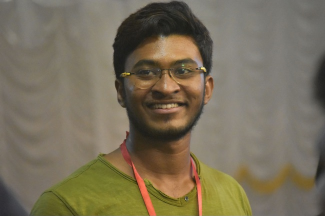

Sole Product Designer · Lead Curriculum Designer · 2025 – Mid 2026
Enabling non-technical educators to build structured AI Tutor experiences at scale.
- 104h → 4hto make a lesson
- 3,000+lessons made
Team & Role
Led the design and development of Studio as a 0→1 system in a lean team, taking ownership across product, pedagogy, and execution to make AI-powered lesson creation work end-to-end.

Defined the core system architecture and end-to-end product experience, and validated it by creating real lessons used in production. Designed the full V0 system solo, overnight, in ~6 hours, then spent the rest of the runway to developer handoff incorporating feedback and documenting flows.
Engineers (2–3): Built the Studio platform and AI Tutor system enabling real-time lesson delivery
Product Manager / Founder: Drove product direction and pilot rollout with schools
↓ Next
IMPACT
Reduced lesson creation from 104 hours to 4, enabling rapid content production and giving educators direct control over how the AI Tutor teaches.
Old workflow: 3 disconnected tools
104 hrs
per lesson: switching tools, rebuilding by hand, no shared source of truth
New workflow: one unified tool
4 hrs
create, structure & publish a lesson in one place
01
Reduced creation time from 104 hours to about 4 (~4.5 hours on average across ~700 logged lessons) by replacing fragmented tools with a single, structured system.
02
Content designers ramped in under 2 hours vs. 40–50 hours, enabled by familiar, low-friction interactions.
Calculated first creation to publish time
03
Enabled new features and lesson types without redesigning core workflows, reducing long-term product complexity.
04
Teachers could define how the AI Tutor teaches, controlling pacing, explanations, and scaffolding.
05
Faster lesson creation made ~10 school pilots possible: teachers could build and control the lessons themselves.
06
Educators set pacing, explanation and scaffolding for every step of a lesson.
↓ Next
USERS & GOALS
To achieve this impact, we focused on what educators and content designers are actually trying to accomplish, not just the tools they use. These goals shaped how the system needed to behave.
Two user roles, one system
EDUCATORS
Personalize instruction for every student
CONTENT DESIGNERS
Design and teach content in one place
Teachers are limited to fixed lesson structures that don't adapt to individual student needs, restricting control over pacing, explanation, and scaffolding.
Creating and updating lessons required switching across tools, where even small changes meant reworking multiple touch points, with limited support for math-specific content.
↓
↓
Educators can define how the AI Tutor teaches, personalizing instruction, pacing, and support to meet each student where they are.
A single place to design and teach lessons, where changes are made once and reflected everywhere, with built-in math support and simple, curriculum-specific tools.
↓ Next
Constraints & Design Tradeoffs
When we started designing Studio, we initially aimed to support even the most complex lessons, but real constraints forced us to make deliberate tradeoffs.
Extreme production time vs need for scale
Creating a single lesson took 104 hours end-to-end, making it impossible to scale. To support real classrooms, this needed to be reduced to <5 hours per lesson without compromising pedagogy.
→ Design for speed without breaking instructional quality
Aggressive timeline driven by real demand
Early prototypes generated strong interest from schools, creating immediate demand to support real curriculum. For V0, we had ~12 hours from my initial sketching to developer handoff.
→ Focus on what must work, not everything that could
Need for deep control without increasing complexity
We wanted to give educators and content designers full control over lessons, but increasing flexibility risked making the system harder to use.
→ Balance flexibility with structured simplicity
Gap between lesson creation and how it is taught
Designing lessons wasn't enough: the system also needed to ensure the AI Tutor delivers instruction as intended.
→ Align how lessons are created with how they are taught
Lack of support for math-specific content creation
Supporting fractions, algebra, geometry, and more introduced challenges that typical content tools like PowerPoint, Google Slides, Canva and more don't handle effectively.
→ Build native support for math content
↓ Next
Design Approach
Given these constraints, the goal was to design a system that could scale lesson creation from 104 hrs → <5 hrs, without compromising pedagogy or increasing complexity.
Learn from real teaching, not assumptions
Worked directly with tutors, took live lessons, and learned how effective lessons are structured and delivered.
→ Mapped real teaching behavior into the system
Borrow familiar interaction patterns
Took inspiration from tools like Canva to reduce cognitive load and make the system intuitive.
→ Enabled fast onboarding with minimal training
Design a flow-based lesson system
Designed a structured flow system where each step controls how the AI Tutor behaves and progresses.
→ Turned lessons into structured, controllable systems
Validate with real users early
Tested with tutors and content designers by creating real lessons and identifying friction points.
→ Refined usability and pedagogy early
Dogfood to uncover real bottlenecks
Created 15+ lessons end-to-end to stress-test the system and identify bottlenecks in reducing creation time.
→ Removed friction and simplified the creation workflow
↓ Next
Outcomes
Studio didn't just reduce lesson creation time, it changed how lessons are designed, taught, and scaled across classrooms.
Lesson creation time
104 hrs → 4 hrsMost of the time previously spent building lessons was eliminated, shifting effort from manual creation to refining instruction.
Content production at scale
~700 lessons, ~4.5 hrs avg~3,128 hours across ~700 lessons: what was previously infeasible became repeatable, validating the system's ability to scale content creation in real conditions.
Control over pedagogy
Restored control to educatorsTeachers can now define how the AI Tutor teaches, controlling explanation, pacing, and scaffolding in real time.
System flexibility
Subject-agnostic by designUsed in English and Physics pilots with no workflow changes, beyond the math it was built for.
Time to onboard
<2 hoursNew content designers went from first login to publishing a lesson in under 2 hours, vs. 40–50 hours on the old fragmented tools.
What educators & designers say